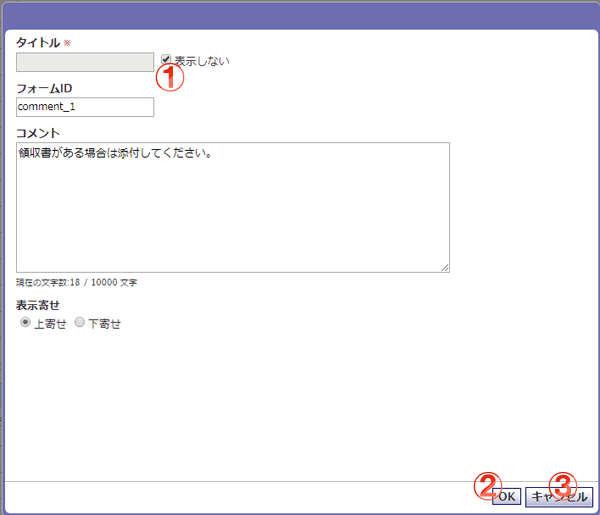

申請内容としてコメントを登録するダイアログです。
固定のテキストを作成する稟議に表示します。

機能説明
タイトル表示切り替えチェックボックスこのチェックボックスにチェックを入れると、稟議申請時にタイトルを非表示にします。 |
OKボタン申請内容の設定を完了し、このダイアログを閉じます。 |
キャンセルボタン申請内容の設定を行わずに、このダイアログを閉じます。 |
表示・入力項目説明
タイトル
申請内容のタイトルを入力します(20文字以内)。
フォームID
この申請内容固有のIDを設定します（20文字以内）。
コメント
作成する稟議に表示する内容を入力します。この内容は稟議作成時には変更できません。
表示寄せ
タイトルを表示しないで稟議にコメントを表示する時、どちらの方向へコメントを寄せて表示するかを選択します。